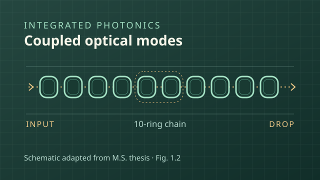
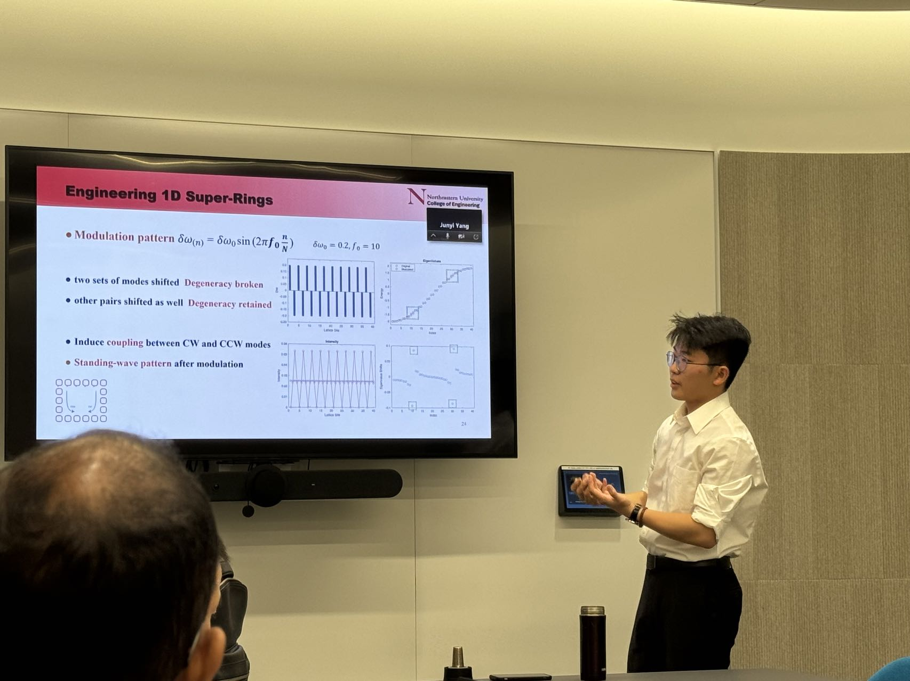
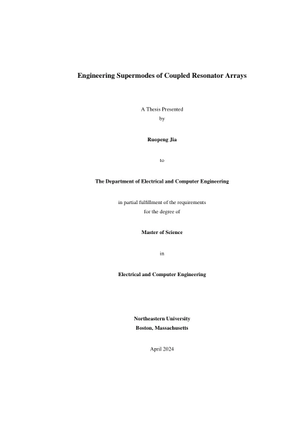

Integrated photonics · M.S. thesis
Coupled resonator arrays
Used numerical optimization to shift selected optical resonances while limiting changes to neighboring modes.
Read about the thesisElectrical engineering & scientific instrumentation
I’m Ruopeng Jia, an electrical engineer studying how photonic devices, optical experiments, and computation can recover more information from weak signals.

01 / Research portfolio

Integrated photonics · M.S. thesis
Used numerical optimization to shift selected optical resonances while limiting changes to neighboring modes.
Read about the thesis
Optical measurement · Field experiment
Aligned and calibrated a 2 km outdoor optical link and characterized its photon-counting signal and background.
See the field experiment
Scientific inference · Independent study
Validated fixed-point inference on an Arty A7 using public CUORE data and measured 2.78 µs of model-core latency.
See the FPGA validation02 / Research writing

M.S. thesis · Northeastern University · 2024
Ruopeng Jia · Electrical and Computer Engineering
Read the full thesis PDF · 68 pages · 12.9 MBRadio astronomy · 2022
Ruopeng Jia · Journal of Physics: Conference Series 2287, 012038
Read the paper03 / Contact
For research inquiries, collaboration, or to arrange a meeting, please reach out by email.